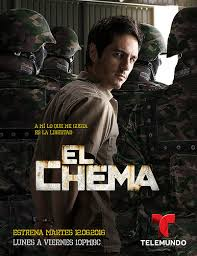

Señora acero |
El Señor de los Cielos |
El Barco |
El Chema |
La Reina del sur |
|---|---|---|---|---|
|  | ||||
|
Titulo Original : Señora acero País: EE.UU. Canal de emision Telemundo Sinopsis de Señora acero: Blanca Soto dará vida a Sara Aguila Bermúdez, una mujer de 28 años de edad que tiene todo lo que una persona puede ser. El día que decide casarse por la Iglesia con su marido Vicente Acero, a petición de su hijo Salvador, un comando asesina a su marido. Este hecho cambia para siempre la vida de Sara ya que descubre que el hombre con el que estaba dispuesta a compartir su vida no era la persona que creía. El gobierno federal incauta todos los bienes y cuentas bancarias del fallecido comandante y los enemigos de su marido la siguen para reclamarle el pago de negocios sucios que ella desconocía. Sara tiene que huir sin un centavo y comenzar una nueva vida Lo que nadie imagina es que aquella mujer común y corriente terminará apadrinada por los grandes capos del narcotráfico mexicano, a quienes logra conquistar utilizando las dos armas más peligrosas que tiene a mano: su belleza y la inteligencia. Ella se vuelve grande en ese mundo de hombres. |
Titulo Original : El Señor de los Cielos Es la historia de un hombre que de la nada pasó a convertirse en uno de los más poderosos del mundo. El poderoso y ahora ‘Señor de los Cielos‘, Aurelio Casillas se rodea de lujos, subordinados y mujeres. Sin embargo es Ximena Letrán, la mujer de su vida y madre de sus hijos, quien ocupa el sitio de la reina de su corazón. Ximena es una hermosa joven que siempre vivió en el mundo del narcotráfico pues es la hija de un narco, ella con tan solo 15 años conoce a Aurelio y se enamora perdidamente de él. El capo mexicano no está solo y como aliados tiene a la familia de narcotraficantes apellidados Robles. En el “Cartel de los robles”, la bellísima hermana Mónica Robles maneja las finanzas pero su lado débil será el secreto enamoramiento que siente por Aurelio Casillas. Del lado de la justicia, Marco Mejía, un policía que perdió a su padre de manos de los narcos está dispuesto a cobrar justicia y persegue los pasos de los carteles. Su novia, Eugenia Casas, es un bella periodista, inteligente, aguerrida que enfrenta a los narcos desde los micrófonos. Todos se entrelazan en una fría guerra que resulta en sangre y muchas vidas perdidas. |
Titulo: El Barco Genero: Drama Idioma: Español Año: 2011 Un cataclismo catástrofe global causa que conduce a la desaparición de la tierra firme. Con el planeta inundado de la tripulación y los jóvenes estudiantes de un buque escuela sobrevivientes parecen ser únicos. Aislados del resto del mundo ni siquiera saben si ya existe la responsabilidad primordial de que el buque llegue a puerto son el capitán Artero y científica nave. Además de esto los estudiantes Ulises Casas. Blanca hija adolescente capitán Suárez, quien se ha embarcado con su hermana pequeña Valeria Patricia Arbués a raíz de la reciente muerte de su madre polizón |
Título original: El Chema Año 2016 Géneros Novelas Directores Nicolás López Guionistas Nicolás López Productores Argos Televisión Reparto Mauricio Ochmann, Mariana Seoane, Itatí Cantoral y Carmen Aub País Estatos Unidos Sinopsis Super Serie de Telemundo El Chema, basado en la vida del personaje de El chema Venegas, uno de los narcotraficantes mas buscado del mundo, aqui veremos el escape de Chema de la cárcel, muy al estilo de lo que hizo el Chapo Guzmán en la vida rea |
Título original: La Reina del Sur Teresa jamás quiso convertirse en Reina de nada pero el destino le jugó sucio y el amor por ¨El Güero¨ la condenó, la eligió para ser Dueña de la Coca, y conquistar un mundo de hombres... Ella se convirtió en leyenda y hoy la conocen como La Reina del sur |
| Señora Acero | El Señor de los Cielos | El Barco | El Chema | La Reina del Sur |